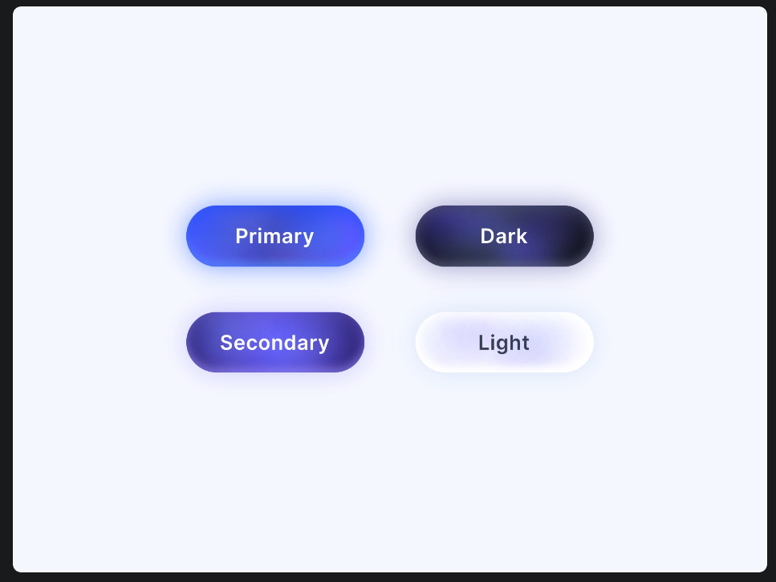

primary_color_gradiant.pngThis reference is a different language from the last one, so I have dropped the squircle-and-rim design entirely. What this one actually is, layer by layer:
You asked for less. Everything below is now set to Subtle: the bloom's opacity dropped from .55 to .26 and its blur from 17px to 13px, the drop shadows roughly halved, and the top sheen went from .13 to .06. Minimal is one further step down if this is still too much. The gradient, shape and geometry are identical in all three — only the light changes.
Your image at native size puts each button at 222×78. Mine are built to exactly that, on the same pale-blue ground, in the same 2×2 arrangement.

imports/primary_color_gradiant.pngThe reference calls its blue “Primary”. TrackMoney's identity is already violet, so there are two honest ways to land this. Both use all four pills; they differ only in which one carries the brand.
The indigo→violet ramp becomes Primary. Blue demotes to Secondary. Nothing about TrackMoney's brand recognition changes.
Blue becomes the brand. Cooler and more banking-conventional, but it retires the violet the app is currently known by.
Controls at their shipping sizes — 52–60px. The bloom scales down with them; a 17px halo on a 52px button would smear.
| Primary ramp | linear-gradient(120deg, #3C3596 0%, #5A47D6 52%, #7B62F7 100%)white label, worst contrast on the lightest stop 4.26:1 |
| Secondary ramp | linear-gradient(120deg, #5B8CFF 0%, #4066FA 52%, #3448EE 100%)white label, worst contrast 3.16:1 |
| Dark ramp | linear-gradient(120deg, #4A4270 0%, #2A2545 52%, #191529 100%)white label, worst contrast 9.11:1 |
| Light ramp | linear-gradient(120deg, #FFFFFF 0%, #F7F5FE 52%, #EDEAFA 100%)#2E2A45 label, worst contrast 11.58:1 |
| Radius | height ÷ 2 — always a true pill, at every size |
| Bloom | A blurred copy of the pill behind it, at Subtle:
blur(13px) opacity .26 at 78px tall; blur(11px) opacity .22 on a CTA;
blur(12px) opacity .28 on the FAB; blur(8px) opacity .18 on a
segment. Plus 0 6px 16px at 16% and 0 2px 5px at 10% in the ramp's
mid hue. |
| Sheen | linear-gradient(180deg, rgba(255,255,255,.06), transparent 55%)
— deliberately barely there. On the Light pill it rises to .28, because a white pill needs the
sheen to read as curved at all. |
| Pressed | saturate(1.06) brightness(.93), bloom to
blur(7px) opacity .14, translateY(1px) scale(.988). 120ms in,
180ms out. |
| Disabled | Gradient and bloom removed entirely — a flat track fill with a hairline. A disabled control must never glow. |
| React Native | expo-linear-gradient for the ramp (needs installing).
The blurred-copy bloom has no RN equivalent: iOS uses layered shadowColor in the
ramp's mid hue; Android has no coloured shadow before API 28, so it gets an absolutely-positioned
gradient halo behind the control instead. |